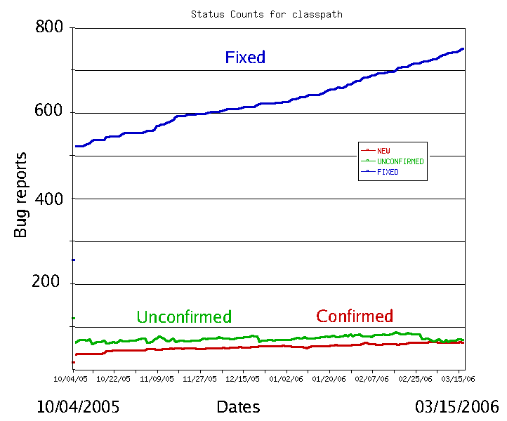

<!doctype html>
<html class="theme-5">
<meta charset="utf-8" />
<link href="../html-slideshow.bundle.min.css" rel="stylesheet" />
<link href="../style.css" rel="stylesheet" />
<script src="https://dbwebb.se/cdn/js/html-slideshow_v1.1.0.bundle.min.js"></script>

<title>Software Testing</title>

<script data-role="slide" type="text/html" data-markdown class="titlepage center">
# Software Testing
## What is testing and why should you test your software?
### Mikael Roos
</script>


<script data-role="slide" type="text/html" data-markdown>
# Agenda

* What is testing?
* Why do testing?
* The engineering process of testing

</script>


<script data-role="slide" type="text/html" data-markdown>
# The essence of testing

1. Find bugs early, before someone else finds them.
2. Provide the feeling that your software is correct.

</script>


<script data-role="slide" type="text/html" data-markdown>
# Software bug

> "Error, flaw or fault in a computer program or system that causes it to produce an incorrect or unexpected result, or to behave in unintended ways."

</script>


<script data-role="slide" type="text/html" data-markdown>
# Software debugging

> "The process of finding and fixing bugs is termed 'debugging'."

</script>


<script data-role="slide" type="text/html" data-markdown>
# Debugging

You seem to have a bug - what to do?

1. Find a way to repeat the bug.
    * A bug that can be repeated is easy to show and analyse.
2. Isolate the bug.
    * Remove not needed stuff, isolate to a module, file, class, method, code construct, one row of code.
3. Fix it.

</script>


<script data-role="slide" type="text/html" data-markdown class="titlepage center">
# Software debugging is not Testing
</script>


<script data-role="slide" type="text/html" data-markdown>
# Software debugging, a story

Let me tell you a story about...

* C++ bus error and asking the professor "help me".

</script>


<script data-role="slide" type="text/html" data-markdown>
# Reason for testing

* Find bugs
* Remove your bugs, before they appear.

</script>


<script data-role="slide" type="text/html" data-markdown class="center">
# Bug report stats

<figure>

<figcaption>The typical bug history (GNU Classpath project data) with Unconfirmed, Confirmed and Fixed bugs.</figcaption>
</figure>

</script>


<script data-role="slide" type="text/html" data-markdown class="titlepage center">
# Verification & Validation
</script>


<script data-role="slide" type="text/html" data-markdown>
# Correct software

* Verification
    * Are we building the product right?
* Validation
    * Are we building the right product?

</script>


<script data-role="slide" type="text/html" data-markdown>
# The terms, once more

> "Assuming we should build X, does our software achieve its goals without any bugs or gaps?"<br>(software verification)

> "Was X what we should have built? Does X meet the high level requirements?"<br>(software validation)

</script>


<script data-role="slide" type="text/html" data-markdown>
# Reasons for testing

* You have done your V&V - Verification & Validation
* Show off that your software is correct

</script>


<script data-role="slide" type="text/html" data-markdown>
# Software bug, a story

Let me tell you a story about...

* Loosing money because of a `<` that should be `<=`.

```
while (dataUnitSize + currentBlockSize < 1024) {
    // Add another dataunit (256 bytes) to
    // the block (1024 bytes) of the file
} ;
```

</script>


<script data-role="slide" type="text/html" data-markdown>
# Summary

* Debugging is easier when the software is small
* Bugs should be corrected as early as possible
* Correct software
    * Well tested
    * Fullfills requirements and expectations
    * Works with various inputs

</script>


<script data-role="slide" type="text/html" data-markdown>
# The essence of testing

1. Find bugs early, before someone else finds them.
2. Provide the feeling that your software is correct.

</script>


<script data-role="slide" type="text/html" data-markdown class="titlepage center">
# How to test

## The engineering process of testing

</script>


<script data-role="slide" type="text/html" data-markdown>
# SWEBOK

* Software Engineering Body of Knowledge
* International standard ISO/IEC TR 19759:2005
* 15 knowledge areas of SE, including
    * Requirements, Design, Construction
    * Testing, Maintenance
    * Configuration management, SE Models and Methods
    * Software Quality

</script>


<script data-role="slide" type="text/html" data-markdown>
# The Guide to SWEBOK

* "The Guide to the Software Engineering Body of Knowledge (SWEBOK Guide)"
* Created through cooperation among several professional bodies and members of industry and is published by the IEEE Computer Society (IEEE)
* To get the "whole picture" of the SE profession

</script>


<script data-role="slide" type="text/html" data-markdown>
# SWEBOK on Software Testing

1. Software Testing Fundamentals
2. Test Levels
3. Test Techniques
4. Test-Related Measures
5. Test Process
6. Software Testing Tools

<p class="footnote"><a href="https://www.computer.org/education/bodies-of-knowledge/software-engineering/topics">SWEBOK Guide V3 Topics</a>, chapter 4 Software Testing </p>

</script>


<script data-role="slide" type="text/html" data-markdown>
# Test levels

* Unit testing
* Function testing
* Integration testing
* System testing
* Acceptance testing

<p class="footnote">Some levels of testing.</p>

</script>


<script data-role="slide" type="text/html" data-markdown>
# Test techniques

* Installation testing
* Compatibility testing
* Regression testing
* Non-functional testing
* Usability testing
* Performance and stability testing

<p class="footnote">Some techniques of testing.</p>

</script>


<script data-role="slide" type="text/html" data-markdown>
# Test processes

* Waterfall development model
* Agile or XP development model
    * Continous integration and test
* Automated testing
    * Daily/Nighly tests
    * Regression test
* Test driven development (TDD)

<p class="footnote">Some processes of testing.</p>

</script>


<script data-role="slide" type="text/html" data-markdown>
# The essentials of testing

* Control that the software follows the reqs
* Will work independently on input received
* Is usable with resonable response times
* Works in the intended surrounding
* Produces the results expected

</script>


<script data-role="slide" type="text/html" data-markdown>
# Industry matters

* Depending on the size and maturity of the organisation
* Testplan follows the requirement spec
* Each programmer do unittest
* Testteam do integration, function and system test
* Acceptance test upon delivery
* Support and maintenance

</script>


<script data-role="slide" type="text/html" data-markdown>
# Research matters

> "It is commonly believed that the earlier a defect is found, the cheaper it is to fix it."

* What is the most efficient way of producing software with regards of testing
* Manual versus automated testing
* Agile versus traditional
* Certifications and formal testing
* Measurements of software quality related to testing

</script>


<script data-role="slide" type="text/html" data-markdown class="center">
# Cost to fix a defect

<figure>

<figcaption>The table shows the cost of fixing the defect depending on the stage it was found (<a href="https://en.wikipedia.org/wiki/Software_testing#Controversy">source</a>).</figcaption>
</figure>

</script>


<script data-role="slide" type="text/html" data-markdown>
# The essence of testing

1. Find bugs early, before someone else finds them.
2. Provide the feeling that your software is correct.

</script>


<script data-role="slide" type="text/html" data-markdown class="titlepage center">
# The end
</script>


<script data-role="slide" type="text/html" data-markdown>
</script>

</html>
